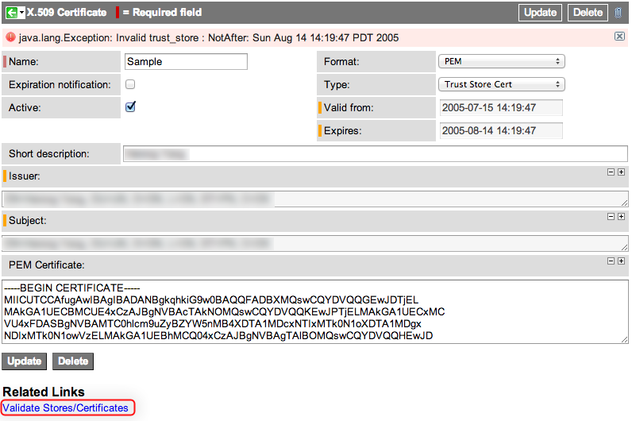

Uploading a Certificate
| |
Note: This article applies to Fuji and earlier releases. For more current information, see Certificates at http://docs.servicenow.com
The ServiceNow Wiki is no longer being updated. Visit http://docs.servicenow.com for the latest product documentation. |
Contents
1 Overview
ServiceNow uses certificates to establish secure connections and validate signatures for features such as:
In general uploading a certificate involves the following steps:
- Generate or purchase a certificate for the secured server or client.
- Upload the certificate to ServiceNow.
| |
Note: When a certificate is updated on the ADFS server, you also need to upload an updated certificate to the instance. |
2 Generate a Certificate
A valid certificate must meet these criteria:
- The certificate can have a key size up to 2048 bits.
- The certificate must have one of these file extensions:
| Extension | Description |
|---|---|
| DER | The Distinguished Encoding Rules format is a binary message transfer syntax. This format also supports the .CER and .CRT file extensions. |
| CER | A certificate file extensions for certificates using the Distinguished Encoding Rules format. |
| CRT | A certificate file extensions for certificates using the Distinguished Encoding Rules format. |
| PEM | The Privacy Enhanced Mail format is a base-64 encoded DER certificate enclosed between "-----BEGIN CERTIFICATE-----" and "-----END CERTIFICATE-----" text strings. |
2.1 LDAP Certificates
Uploading an SSL certificate allows ServiceNow to establish an LDAP over SSL (LDAPS protocol) connection with an LDAP server. ServiceNow accepts two types of LDAP certificates:
- LDAP server certificate (required for all LDAP configurations): Can be any supported type.
- LDAP client certificate (required for mutual authentication): Must be a Java Key Store type certificate.
2.1.1 Multiple LDAP Certificates
If there are multiple server certificates, ServiceNow tries each server certificate in turn until the LDAP server allows the connection. If you use multiple LDAP servers, be sure to include the SSL certificate for each LDAP server.
If your LDAP server requires mutual authentication (requires the client to present a certificate in addition to the server), you must also provide your LDAP server's client certificate in a Java Key Store type certificate.
2.2 Example: Generating a Server Certificate with Keytool
The following steps illustrate using keytool to generate a new Java key store file, create a certificate signing request (CSR), and import the private key, public certificate pair, and signed certificates into the key store. See the Java keytool documentation for more information on generating keys and CSRs. Enter these commands in a command line interface.
- Generate a Java keystore and key pair. For example, this command creates a keystore called my.keystore and generates a private key called mydomain within the keystore.
keytool -genkey -alias mydomain -keyalg RSA -keystore my.keystore
- Generate a CSR for an existing Java keystore. For example, this command generates a CSR called mydomain.csr or the mydomain key.
keytool -certreq -alias mydomain -keystore my.keystore -file mydomain.csr
- Import a root or intermediate certificate authority CA certificate to the Java keystore. For example, this command imports the CA certificate for Thawte. This command assumes that Thwate was the CA that signed the CSR.
keytool -import -trustcacerts -alias root -file Thawte.crt -keystore my.keystore
- Import a signed primary certificate to the Java keystore. For example, this command imports the signed certificate mydomain.crt into the keystore.
keytool -import -trustcacerts -alias mydomain -file mydomain.crt -keystore my.keystore
- Upload the certificate in the key store file (my.keystore) to the instance.
2.3 Example: Generating an LDAP client certificate with OpenSSL
These steps illustrate generating an LDAP client certificate for mutual authentication. The final output is a PKCS12 certificate stored within a Java Key Store. These steps assume you have access to OpenSSL. See the OpenSSL documentation for more information about generating certificates. Enter these commands in a command line interface.
- Generate a self-signed client certificate. For example, this command creates a client certificate test1-cert.crt based on the test1-key.key private key.
openssl req -x509 -nodes -days 365 -newkey rsa:2048 -keyout test1-key.key -out test1-cert.crt
- Convert both the certificate file and private key to PKCS#12 (a file with a .pfx or .p12 extension). For example, this command converts the client certificate and private key to a PKCS#12 certificate called test1-certificate.pfx.
openssl pkcs12 -export -out test1-certificate.pfx -inkey test1-key.key -in test1-cert.crt
- Generate the Java Key Store and import the pkcs12 file into it. For example, this command imports the certificate to the test1.jks Java Key Store.
keytool -importkeystore -srckeystore test1-certificate.pfx -srcstoretype PKCS12 -destkeystore test1.jks
- Upload the certificate in the key store file (test1.jks) to the instance.
3 Upload a Certificate to an Instance
Administrators can add a certificate to the instance from the Certificates module.
- Navigate to System Definition > Certificates.
- Click New.
- Attach the certificate to the record. During the upload, the module extracts and displays the certificate's read-only properties in these fields:
- Valid from date
- Expiration date
- Issuer
- Subject of the certificate
- (PEM only) the Base-64 encoded string from the certificate
- Fill in the form (see table).
- Click Submit.
- Validate the certificate or key store.
{kind=link}
| Field | Description |
|---|---|
| Name | Specify a unique name for the certificate |
| Expiration notification | Select whether you want ServiceNow to send a notification when the certificate is about to expire. |
| Active | Select whether ServiceNow should use this certificate for secure communications and signing requests. |
| Short Description | [Optional] Enter a text description of the certificate such as the requester or server name. |
| Issuer | ServiceNow automatically adds the certificate issuer to this field. Attach the certificate to the X.509 certificate record to populate this field. |
| Subject | ServiceNow automatically adds the certificate subject to this field. Attach the certificate to the X.509 certificate record to populate this field. |
| PEM Certificate | Enter the base-64 encoded PEM-formatted text containing the DER certificate. ServiceNow decodes the certificate to populate the Issuer and Subject fields. |
| Format | Select the certificate format. ServiceNow supports the PEM and DER formats. See Generate a Certificate. |
| Type | Select the certificate container. ServiceNow recognizes certificates from trust stores, Java key store, and PKCS12 key stores. |
| Valid from | ServiceNow automatically adds the certificate valid from date to this field. Attach the certificate to the X.509 certificate record to populate this field. |
| Expires | ServiceNow automatically adds the certificate expiration date to this field. Attach the certificate to the X.509 certificate record to populate this field. |
3.1 Trusted Server Certificates
ServiceNow validates outbound Web Service calls by using the certificate provided by the service provider. By uploading the service provider's trusted server certificate, ServiceNow ensures it is connecting to a valid and secure service.
- Create a new Certificate record with the type of "Trust Store Cert".
- Either attach the service provider's DER formatted certificate, or copy and paste the service provider's PEM format certificate into the PEM Certificate field.
4 Certificate Trust
By default, ServiceNow trusts a certificate's Certificate Authority (CA). This ensures ServiceNow accepts self-issued certificates. You must set the system property com.glide.communications.trustmanager_trust_all to false. If you do not set the property false, the instance trusts any certificate.
5 Validating Certificates and Key Stores
Administrators should validate certificate or key stores after uploading them to determine if there are any issues to resolve. If ServiceNow encounters any errors with the certificate or key store, it displays an error message.
- Navigate to System Definition > Certificates.
- Select the certificate or key store you want to validate.
- From the X.509 Certificate form, click the Validate Stores/Certificates related link. For example, this certificate fails validation because it is expired.
- Sample validation of a certificate
{kind=link}
6 Enhancements
6.1 Dublin
- Administrators can validate certificates and key stores to test their configuration. In addition, a new system property allows ServiceNow to provide more detailed information about certificate and key store errors.